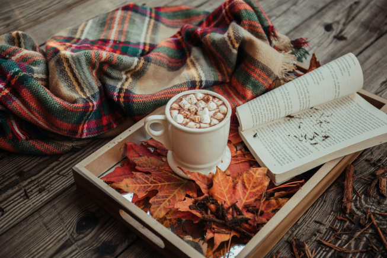

Welcome to my first website.
A little bit about myself. I have a varied background, having worked as a Clinical
Research Associate,
Data Editor & Curator, Cancer Researcher, a French teacher and a Level 3 and 4 Teaching Assistant. I am
currently looking into a career change, hence signing up to this masters. I have always had an interest in
coding especially after completing a C++ module in my previous first masters.
The poem below always resonated with me as a reminder that life is a series of choices, each one shaping the path we end up on without ever revealing what the alternative might have held. To me, it is less about which road is "right" and more about making a decision with confidence and not living with regret over the one not taken.
The Road Not Taken By Robert Frost
Two roads diverged in a yellow wood,
And sorry I could not travel both
And be one traveller, long I stood
And looked down one as far as I could
To where it bent in the undergrowth;
Then took the other, just as fair,
And having perhaps the better claim,
Because it was grassy and wanted wear;
Though as for that the passing there
Had worn them really about the same,
And both that morning equally lay
In leaves, no step had trodden black.
oh, I kept the first for another day!
Yet knowing how way leads on to way,
I doubted if I should ever come back.
I shall be telling this with a sigh
Somewhere ages and ages hence:
Two roads diverged in a wood, and I -
I took the one less travelled by,
And that has made all the difference.
Travelling is one of my hobbies. The experiences you have while travelling changes you as a person, opens your mind to new experiences and how the world works.
Exercise! Either running, CrossFit, Strength Training, Walking, Hiking or Swimming. They all add balance to my life.
Cooking! Food is medicine for the soul. I enjoy cooking and baking while sharing the outcome with family, friends and colleagues.
Finally, reading creates a quiet space to escape and recharge.
What has cities, but no houses; forests, but no trees; and water, but no fish?
Thought I'd share the link to the brain teaser in case anyone would like to share with their families or friends.
Click here for the brain teaser link!Sharing some Autumn vibes

A little fun element!